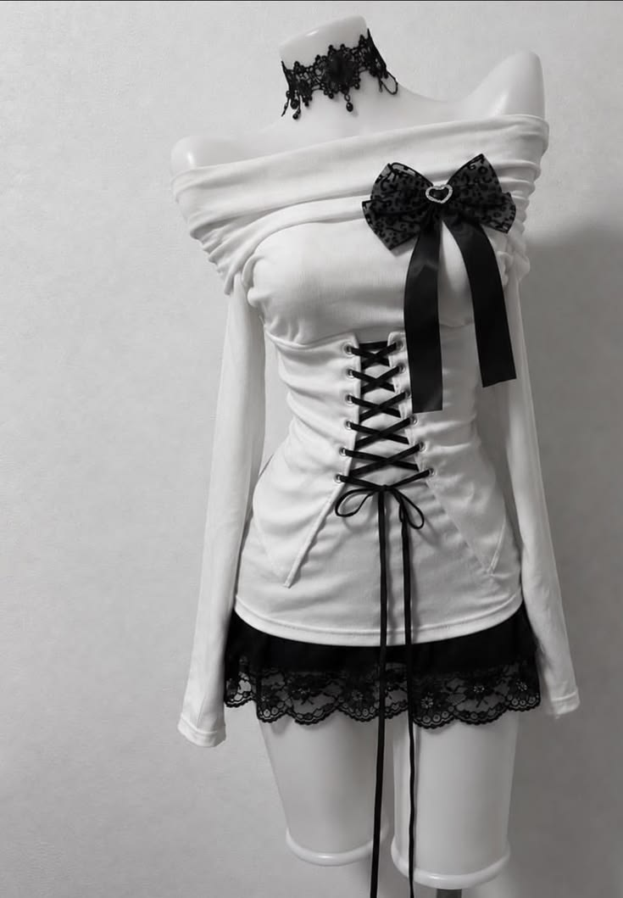
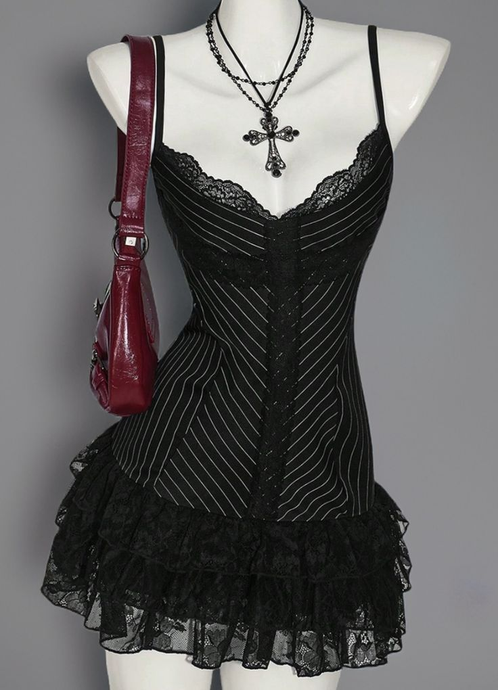
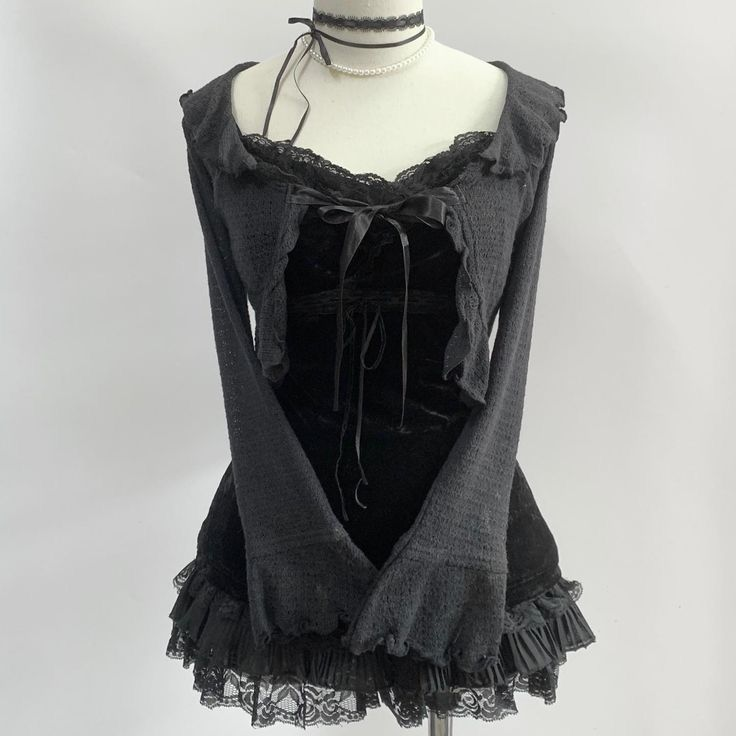
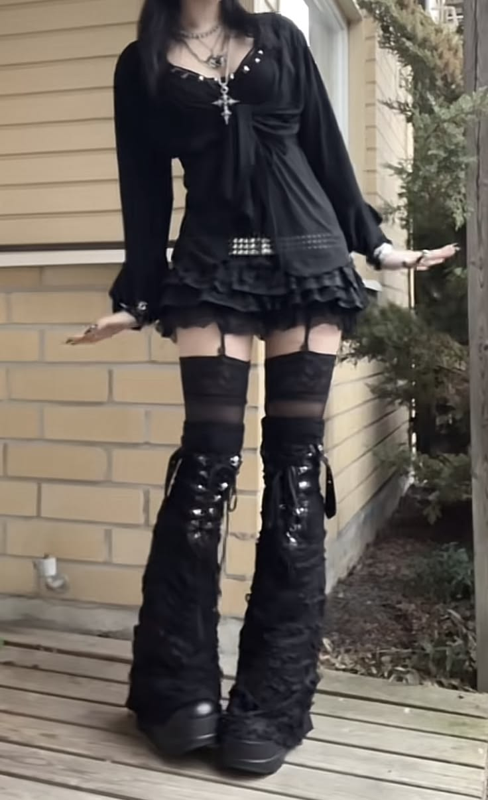
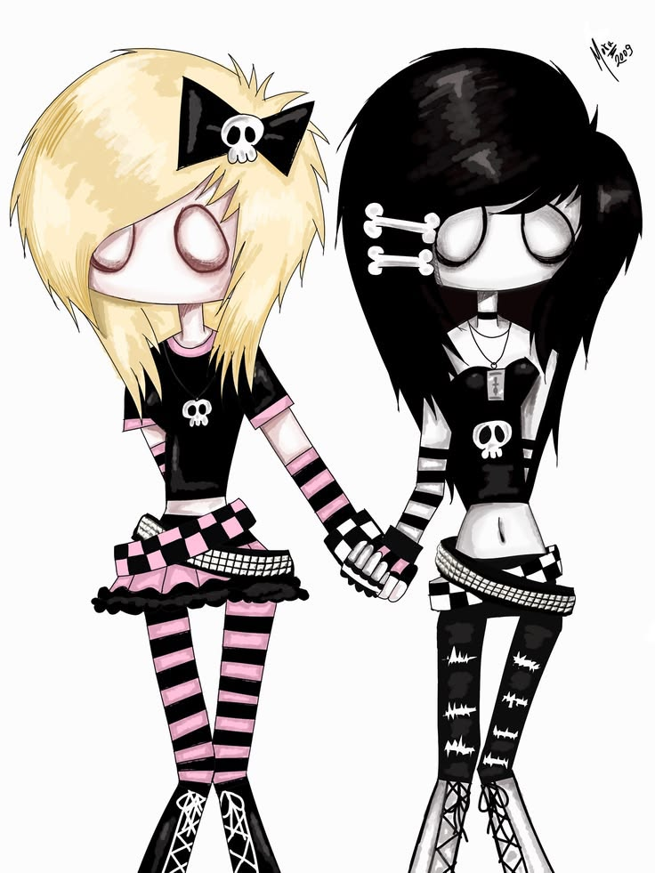

Образы для следующих работ





Чёрное платье, асимметричная сетка, перекрёстные ленты, чулки с кружевом, массивные ботинки или туфли.
□ Стиль эмо/гранж
□ Кружево, легкие открытые элементы одежды
□ Браслеты, пирсинг, чулки, перчатки в полоску
□ Волосы слоями, челка набок